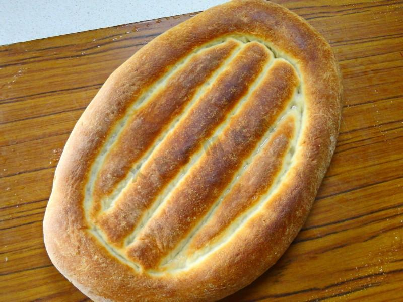
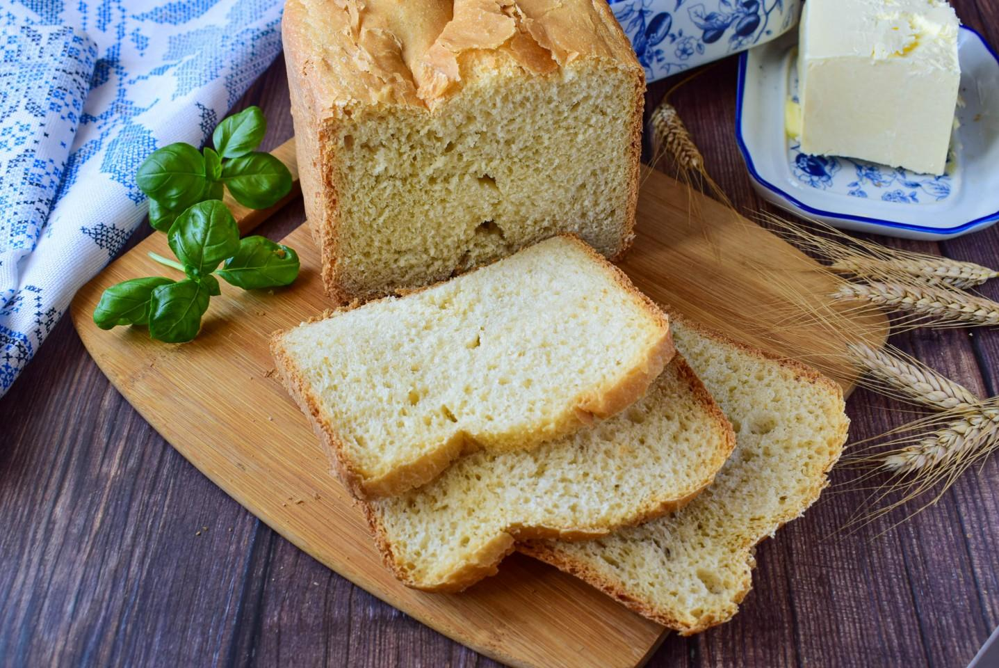

СОСТАВ / ИНГРЕДИЕНТЫ:
Сметана 2 стол.л. Вода 400 мл Сухие дрожжи 7 гр Пшеничная мука (возможно, больше) 550 гр Соль 12 гр Сахар 20 гр Растительное масло (без запаха) 60 мл
Время приготовления: 2 ч 30 мин
Шаг 1. Необходимые продукты. Муку я использую Макфу. Вы смотрите по своей муке, возможно, ее понадобится больше.
Шаг 2. Подогреваем 100 мл воды, добавляем сметану, сахар и дрожжи, все хорошо размешиваем. Дрожжи всыпайте потихоньку, чтобы не встали колом.
Шаг 3. Накрываем мисочку и ставим в теплое место минут на 15. Как опара начнет оседать-значит, готова.
Шаг 4. Муку просеиваем с солью в большую миску, делаем углубление, вливаем дрожжи и остальную воду, тоже теплую.
Шаг 5. Потихоньку подгребая муку с краев, замешиваем тесто. Если чувствуете, что получается круто-подлейте немного воды. Если тесто слишком жидкое, то наоборот, добавьте немного муки. Мука очень разная, поэтому её может уйти как больше, так и меньше, чем по рецепту. Ориентируйтесь на консистенцию теста - в начале замеса оно будет достаточно липким, но собираться в комок.
Шаг 6. Стол и руки смазываем маслом, вываливаем тесто и начинаем месить ручками. Месить надо долго, минут 20. В этом то и секрет этого хлеба! Когда тесто начнет отлипать от рук и станет эластичным, сворачиваем его, смазываем маслом со всех сторон, кладем в миску.
Шаг 7. Накрываем крышкой или обвязываем марлей, и убираем в теплое место не менее, чем на час. Тесто должно увеличиться в объеме в три раза. Вот такое оно будет. Бродить оно будет сильно!
Шаг 8. После этого тесто выкладываем на стол, обминаем, разрезаем на две части. Такие овальные заготовки получаются.
Шаг 9. Берем одну заготовку, кладем на противень (смазанный маслом или застеленный бумагой) и растягиваем его руками, придавая круглую или овальную форму. Кстати, матнакаш с армянского так и переводится-растянутый пальцами. Толщина примерно полтора см.
Шаг 10. Затем делаем бороздки по периметру и посередине. Я делала пальцами, можно применить какой нибудь инструмент, например, ролик для нарезания теста.
Шаг 11. Накрываем влажным полотенцем и даем подойти в течение 10-15 минут. Затем смазываем водой, смешанной с маслом (примерно 2 столовых ложки теплой кипяченой воды быстро перемешиваем с 2 чайными ложками растительного масла и сразу же наносим) и проводим бороздки еще раз.
Шаг 12. Ставим в очень горячую духовку, 300-320 градусов. Выпекаем матнакаш 10 минут. Вот такой он получается.
Шаг 13. Сбрызгиваем хлебушек водой, накрываем двумя полотенцами и оставляем отойти от духовки. А пока точно таким же образом выпекаем вторую заготовку. Получаем два замечательных румяных матнакаша.
Шаг 14. Говорят, что этот хлеб не черствеет в течение недели! Но мы его съедаем очень быстро, так что проверить не удается. Удачной выпечки!

СОСТАВ / ИНГРЕДИЕНТЫ:
Вода 230 мл Пшеничная мука 400 гр Соль 1 чайн.л.Сахар 2 стол.л. Сухие дрожжи 6 гр Растительное масло 2 стол.л.
Время приготовления: 3 ч
Шаг 1. Как сделать французский хлеб в хлебопечке? Подготовьте для этого все необходимое. Муку заранее просейте через сито, чтобы насытить её кислородом. Благодаря этому готовый хлеб будет пышнее и воздушнее. Вода должны быть комнатной температуры.
Шаг 2. При приготовлении хлеба в хлебопечке сначала добавляют все жидкие ингредиенты, а затем сухие. В чашу хлебопечки налейте необходимое количество воды и добавьте соль.
Шаг 3. Затем всыпьте просеянную муку. Учтите, что муки у вас может уйти больше или меньше, чем у меня. Ориентируйтесь по консистенции теста.
Шаг 4. Сверху на муку добавьте сахар и дрожжи. Поставьте чашу в хлебопечку и включите основной режим выпечки. У меня он длится 3 часа. Вес хлеба 700 или 750 гр. (в разных моделях хлебопечки будет по-разному, ориентируйтесь на свою технику), цвет корочки средний. По желанию можете добавить ароматные травы.
Шаг 5. Когда тесто сформируется в колобок, полейте на него растительное масло. Благодаря этому колобок начинает активнее формироваться и перестает прилипать к стенкам.
Шаг 6. За время замешивания тесто становится однороднее и пластичнее.
Шаг 7. Спустя необходимое количество времени хлебопечка издает звуковой сигнал, оповещающий о том, что хлеб готов. О его готовности говорит и аромат свежего хлеба, который уже разносится по дому. Извлеките хлеб из чаши.
Шаг 8. Вкусный, ароматный домашний хлеб готов. Заверните его в полотенце и остудите. Приятного аппетита!